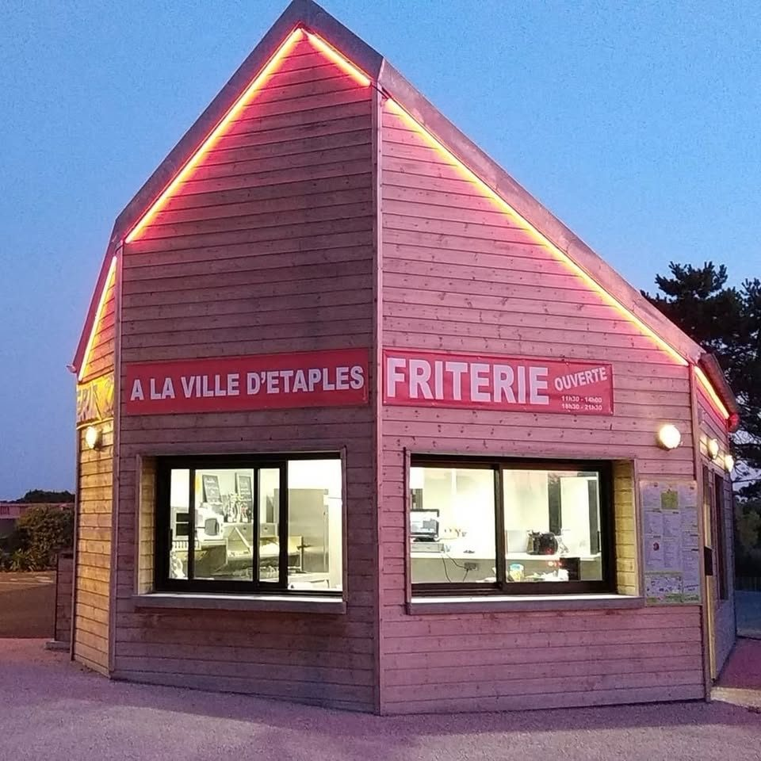
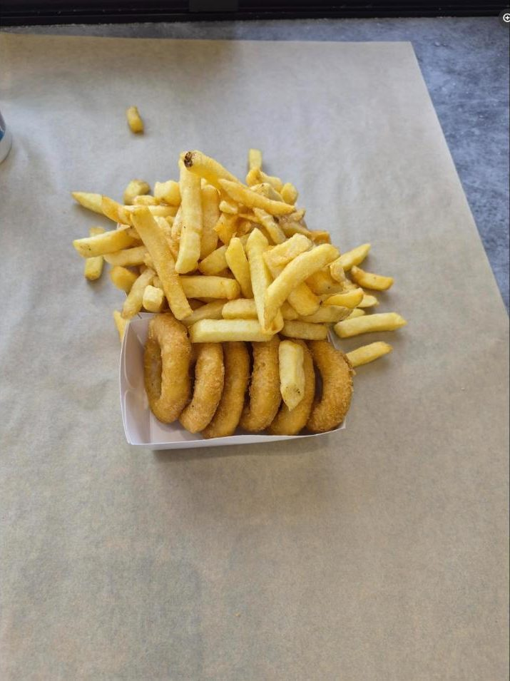

Le kiosque
On ne peut pas
la manquer


La friterie du port · Étaples-sur-Mer
Frites, fricadelles, américains, burgers et assiettes : la petite maison en bois aux néons rouges du boulevard de l'Impératrice.

Frites & onion ringsAu comptoir
Des frites dorées, une sauce au choix parmi près de vingt, une barquette en carton et le port à deux pas : la friterie comme on l'aime sur la Côte d'Opale.
Le kiosque

La vie du port
Sur notre page, on partage les rendez-vous d'Étaples-sur-Mer, comme le programme de la fête du Hareng Roi des 14 et 15 novembre.
Suivre la friterieInfos pratiques